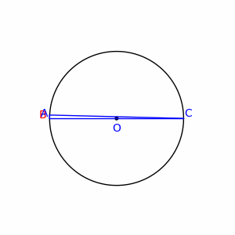
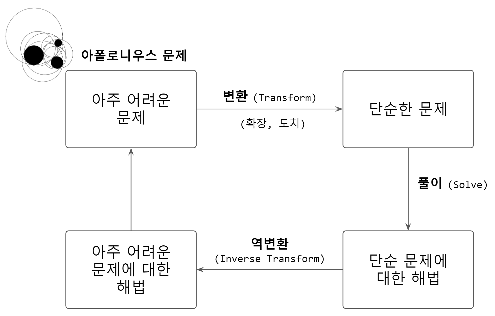

기하학에서 자주 사용되는 수학기소는 다음과 같다.
| 의미 | 수학기호 | \(\LaTeX\) |
|---|---|---|
| 선분(Line Segment) | \(\overline{\rm AB}\) | \overline{\rm AB} |
| 각(Angle) | \(\angle\) | \angle |
| 측정된 각(Measured Angle) | \(\measuredangle\) | \measuredangle |
| 삼각형(Triangle) | \(\triangle\) | \triangle |
| 정사각형(Square) | \(\square\) | \square |
| 합동( congruent ): 같은 모양, 크기 | \(\cong\) | \cong |
| 닮음(similar, same shape) | \(\sim\) | \sim |
| 평행(is parallel with) | \(\|\) | \| |
| 수선(perpendicular): 어떤 일정한 직선 또는 평면에 수직인 직선 | \(\perp\) | \perp |
기하학에서, 탈레스 정리(영어: Thales’ theorem)는 원의 지름의 원주각은 직각이라는 정리이다. 즉, 원의 한지름을 \(\overline{\rm AC}\)라 하고 이 원주 위에 있는 \(A\), \(C\) 이외의 임의의 점을 \(B\)라 하면, \(\angle ABC\)는 직각이다.
이것에 대한 증명은 다음 내용을 전제로 두고 전개해 나간다.
상기 내용을 바탕으로 \(\alpha = \angle OBA, \beta = \angle OBC\)로 각각 두자. 그러면 \(\angle ABC\)는 삼각형이기 때문에 다음이 성립한다.
\[\alpha + \left( \alpha + \beta \right) + \beta = 180^\circ \]
이제 \(\alpha , \beta\) 에 대해 정리하면 다음을 얻을 수 있다.
\[2\alpha + 2\beta =180^\circ \] \[2( \alpha + \beta ) =180^\circ\]
따라서, 원지름을 밑변으로 하고 원에 접하는 삼각형의 각, 임의 \(\angle ABC\)은 직각이다.
\[\therefore \alpha + \beta =90^\circ \]
|  |
아폴로니우스 원(circle of Apollonios)은 평면 위의 두 정점 \(A\), \(B\)에 대하여 거리의 비가 \(\overline{PA} : \overline{PB} = m : n\)인 점의 자취 \(P\)를 나타낸 도형은 선분 \(\overline{AB}\)를 \(m:n\)으로 내분하는 점과 \(m:n\)으로 외분하는 점을 지름으로 갖는 원을 일컽는다.1
아폴로니오스의 문제란 유클리드 기하학에서 평면에 주어진 3개의 원에 접하는 원을 그리는 것이다. 특히 3개의 원 내부에 위치하는 내접원을 찾아내는 문제다.

tikz 마크다운\usetikzlibrary{arrows}
\usetikzlibrary{patterns}
\definecolor{zzffzz}{rgb}{0.6,1,0.6}
\definecolor{ffcctt}{rgb}{1,0.8,0.2}
\definecolor{yqyqdz}{rgb}{0.5019607843137255,0.5019607843137255,0.8509803921568627}
\begin{tikzpicture}[line cap=round,line join=round,>=triangle 45,x=1cm,y=1cm]
\clip(-4.505289256198347,-6.316528925619829) rectangle (21.02198347107439,13.083471074380155);
\draw [line width=2pt,pattern color=yqyqdz,fill=yqyqdz,fill opacity=0.25] (2,0) circle (3cm);
\draw [line width=2pt,pattern color=ffcctt,fill=ffcctt,fill opacity=0.25] (6,0) circle (3cm);
\draw [line width=2pt,pattern color=zzffzz,fill=zzffzz,fill opacity=0.25] (4,3.46415) circle (3cm);
\end{tikzpicture}Funky tikz
데이터 과학자 이광춘 저작
kwangchun.lee.7@gmail.com